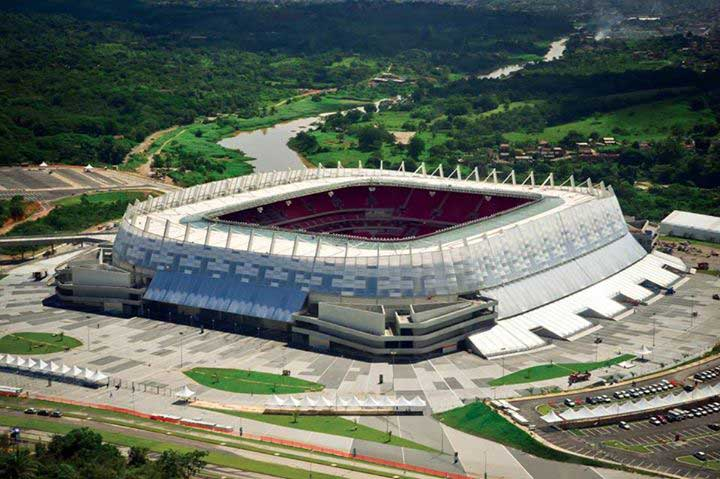
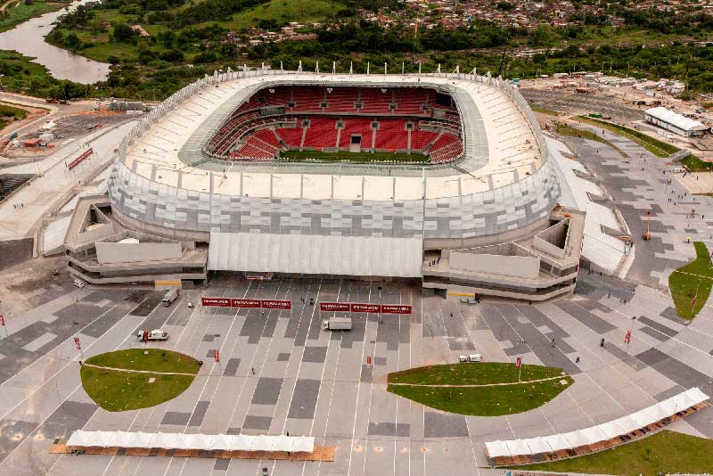

Castelão
- 

- 
Construído em 1973, o Estádio Governador Plácido Castelo, popularmente conhecido como Castelão, foi reformado para acolher um público de até 64.846 pessoas. A arena ganhou estacionamento coberto com 1.900 vagas e conta com estrutura de camarotes, área VIP, setor de imprensa, zona mista e vestiários renovados. Todos os assentos são protegidos por uma cobertura. O acesso ao local também é um diferencial: com a construção de quatro corredores exclusivos de ônibus, de uma linha de VLT (Veículo Leve sobre Trilhos) e de duas estações de metrô, o torcedor tem mais facilidade de locomoção.ca